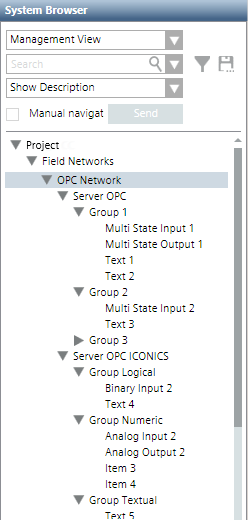
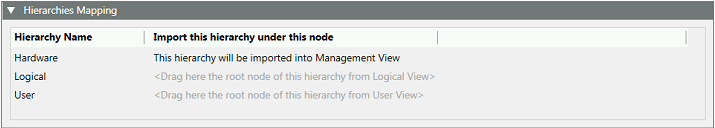
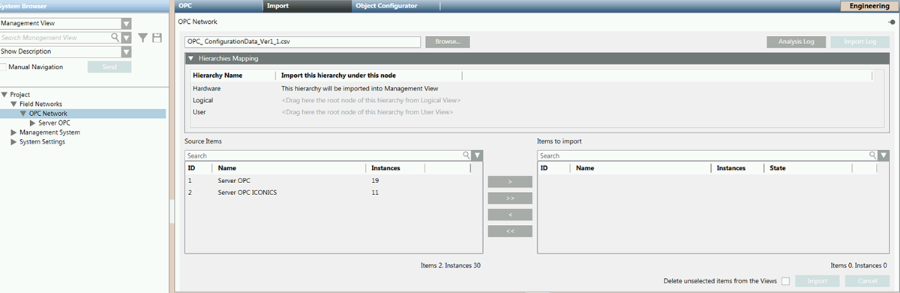

OPC Items Import
The import of the OPC items consists in acquiring the OPC servers configured in the OPC items configuration file (CSV). The data in this file represents the OPC items as they will be created under the OPC network based on hierarchies mapping and import rules.

Any text groups defined in the CSV file will be created in the OPC library and then used by the OPC items.
After the import it is possible to modify the root of the hierarchy.
For instructions, see Importing Third-party OPC Server Data.

Validation for OPC servers
If an OPC server is subject to validation, you have to provide the password to delete it.
If an OPC group or item is subject to validation, remember to set the validation profile of the corresponding server accordingly in order to be able to provide the password and delete the OPC server.
Deleting OPC network
You cannot delete the network while an import is in progress.
OPC Items Re-import
The re-import of the OPC items works in the same way as the import operation.
Re-importing OPC data contained in a CSV configuration file result in:
- Re-importing the OPC servers contained in the file (re-import of individual elements like groups, items, or tags is not supported).
- OPC servers already existing being updated as follows:
- Creation of new data points.
- Update of existing data points.
- Deletion of existing data points not present in the CSV file (only if the Delete unselected items from the views check box is selected).
- New strings are added to existing text groups.
- Management View, logical view, and any user-defined views are updated.
- If the Delete unselected items from the view check box was selected, any OPC servers that are no longer present in the configuration file or were not selected for the re-import will be deleted.
- If a tag is not re-imported, the content of the associated Data Point Element is reset. Also, if no other Data Point Element is associated with other tags, the data point is removed.
Removal of workstation alarms from OPC items
Workstation alarms can be removed from any existing OPC items by re-importing the same OPC items using a CSV file that does not contain the alarm entry for the corresponding OPC item. A workstation alarm entry is defined by the [AlarmClass], [AlarmType], [AlarmValue],[EventText] and [NormalText] fields. You have to manually delete these fields corresponding to the point for which you want to remove the workstation alarms.
Driver might be down between an import and a re-import
In this situation, if you click Import, this action does not produce the expected result (starting the import). Remember to keep on trying until the import is possible again.
OPC Items Import Workspace
When you are in Engineering mode and select the OPC network in System Browser, the Import tab lets you define the hierarchies mapping and then import the OPC servers described in a CSV configuration file. For instructions see Importing Third-party OPC Server Data.
Hierarchies Mapping for OPC
Before you import OPC items from a configuration file, the Hierarchies Mapping expander lets you define in which System Browser view hierarchies of objects will be imported, that is, where they will be automatically built according to the management, logical, or user-defined level. By default, the Hardware hierarchy is assigned to the Management View only. For the logical view or user-defined view, you must assign the view root level.

The hierarchies mapping is saved only when the import starts. If you modify the mapping without starting the import, any change is lost.
The mapping can be changed at any import.
Import of OPC Servers
Clicking the Browse button you can select a CSV configuration file.
- After you select the file to import, clicking Analysis Log you open a log about pre-import operations. The configuration file is parsed to check for errors or unsupported objects before import. A message box informs you of any warnings/errors and suggests viewing the log.
Then you can:
- Define the hierarchies mapping for the OPC servers to import.
- View the OPC servers available in the selected configuration file (Source Items). In particular, you can search for specific OPC servers to import, and move OPC servers from Source Items to Items to Import.
- Have a preview of the OPC servers that will be imported.
Before importing the selected OPC servers you can select Delete unselected items from the views. This option lets you specify whether, during the import, any OPC servers that are not present in the file to import must be removed from the views. You can use this option, for example, when there are some pre-existing OPC servers in the system for that view, but you do not want to retain them. If selected, any items relevant to those OPC servers are also deleted.

Clicking the Import button to start the import process.
- A Cancel button is available to cancel the import operation.
- During the import, the State column indicates the status of the import for each selected object model (such as,
in progress,completed, orfailed).
- Once the file processing is completed successfully, clicking Import Log you can view a summary of the import outcome in the Import dialog box (such as, New instances created/Instances modified/Failed instances/Deleted instances/import completed in [
min/sec]). The imported items are available in System Browser as instances of the selected family/device. You can also save the import log in a .txt file.